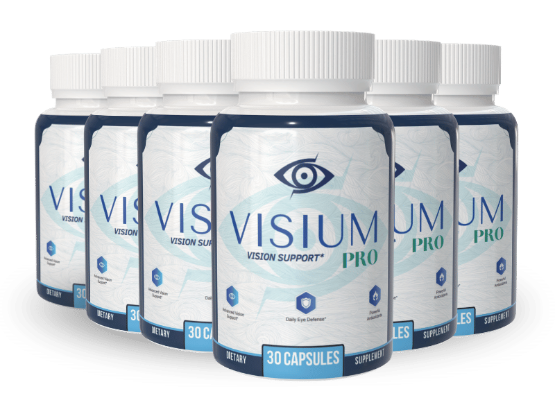

What Is Visium Pro And How Does It Work?
You sit at the kitchen table, the morning light spilling over the newspaper, and you notice the words are a shade fuzzier than yesterday. That fleeting moment of hesitation, the extra blink, the subtle stretch of the eyes, is the silent thief that steals clarity millimeter by millimeter. It is not a dramatic loss; it is a whisper that grows louder each day, turning a crisp headline into a soft blur.
Inside the eye, photoreceptor cells rely on a cascade of biochemical handshakes to turn photons into signals. Vitamin A fuels rhodopsin, the pigment that awakens in dim light, while zinc ferries that vitamin into the retina’s inner sanctum. When any link in that chain falters, the brain receives a weaker picture, and the brain compensates by asking the eyes to work harder, creating fatigue and haze.
Most of us try to fight the decline with brighter lamps, larger fonts, or endless eye drops, but those are band‑aid solutions. The underlying problem is a gradual depletion of essential micronutrients and a rise in oxidative stress from UV exposure and screen radiation. Without replenishing the body’s own supply chain, the retinal cells continue to erode, and the visual pipeline narrows.
Visium Pro arrives as a calibrated blend of six clinically studied nutrients that directly address those missing links. Each capsule delivers the exact amount of Vitamin A, C, E, Zinc, Selenium and Chromium that research shows can restore retinal integrity, neutralize free radicals, and support micro‑vascular health. The formula is designed to work in harmony, not in isolation, so the eyes receive a full‑spectrum rescue.
The capsules are small, easy‑to‑swallow, and formulated for maximum absorption. Lipid‑soluble vitamins like A and E are paired with natural emulsifiers, while the mineral salts are chelated for rapid uptake. One serving each morning with a light meal is all that is needed to flood the eye’s cellular factories with the building blocks they crave.
Realistic expectations matter. The body does not rebuild a retinal cell overnight; it needs a steady supply over weeks. Most users report noticeable clarity improvements after 30 days, with optimal results emerging between 60 and 90 days of consistent use. Visium Pro is a long‑term partner, not a quick‑fix miracle.
Visium Pro Ingredients
Visium Pro’s six‑ingredient matrix was crafted after reviewing dozens of peer‑reviewed studies on ocular health. Each nutrient is present at a clinically validated dose, and the blend is balanced so that the antioxidants recycle each other while the minerals support enzymatic transport. The result is a synergistic formula that works at the cellular level, not just at the surface of the eye.
- Vitamin A (Retinal Photopigment Support) (5,000 IU): Vitamin A is the cornerstone of rhodopsin production, the light‑sensing molecule that lets us see in low‑light conditions. Clinical trials show that a daily dose of 5,000 IU improves night‑vision acuity and reduces corneal dryness. The retinol form used in Visium Pro is derived from natural beta‑carotene, ensuring gentle absorption.
- Vitamin C (Ocular Antioxidant Shield) (500 mg): Vitamin C concentrates in the aqueous humor, where it scavenges free radicals generated by UV exposure and digital screens. Studies indicate that 500 mg daily lowers lens opacity progression and supports overall ocular comfort. Its water‑soluble nature complements the lipid‑soluble vitamins for full‑spectrum protection.
- Vitamin E (Lipid Membrane Defense) (200 IU): Vitamin E protects the phospholipid membranes of retinal cells from oxidative breakdown. Research demonstrates that 200 IU per day reduces lipid peroxidation markers and works synergistically with Vitamin C to recycle oxidized molecules. The tocopherol blend in Visium Pro is mixed‑tocopherol for enhanced stability.
- Zinc (Retinal Structural Mineral) (15 mg): Zinc is densely packed in the retina and choroid, where it activates enzymes that convert Vitamin A into its active form. A 15 mg daily dose has been shown to improve macular pigment density and visual sharpness in aging populations. The zinc is chelated with picolinic acid for superior bioavailability.
- Selenium (Enzymatic Recycler) (100 µg): Selenium is a cofactor for glutathione peroxidase, the enzyme that continuously recycles spent antioxidants. Clinical data reveal that 100 µg per day sustains antioxidant cycles, keeping the eye’s defense system active throughout the day. The selenomethionine used is plant‑derived and highly absorbable.
- Chromium (Microvascular Support) (120 µg): Chromium assists in glucose metabolism, ensuring that the tiny capillaries feeding the macula receive steady energy. Studies suggest that 120 µg daily improves micro‑circulatory flow and reduces retinal edema risk. The chromium picolinate form is chosen for its proven uptake efficiency.
Visium Pro contains no cheap fillers, artificial binders, or synthetic colors. Every batch is manufactured in a FDA‑registered, cGMP‑certified facility in the USA, with third‑party testing for potency, purity and heavy‑metal safety. The result is a clean, potent supplement you can trust.
Visium Pro Safety & Side Effects
All six ingredients in Visium Pro are nutrients the human body already recognizes and utilizes. Because they are delivered at levels that mirror dietary reference intakes, the formula works as a gentle nutritional top‑up rather than a harsh pharmaceutical assault. This means the risk of adverse reactions is extremely low for healthy adults.
Synthetic drugs often trigger side effects by overwhelming receptors or interfering with natural pathways. Visium Pro, by contrast, supports the eye’s innate antioxidant and mineral cycles, allowing cells to repair themselves without triggering inflammation or toxicity. Users with normal kidney function typically experience no digestive upset, and any mild stomach comfort is usually due to the natural emulsifiers.
Every capsule is produced in a U.S. cGMP‑certified plant that follows strict batch‑testing protocols for potency, microbial contamination and heavy‑metal limits. Independent labs have confirmed that each lot meets label claims with less than 0.5% variance. As a precaution, the label advises pregnant or nursing women, as well as individuals on prescription blood‑thinners, to consult a physician before starting any new supplement. This disclaimer reflects responsible practice, not known danger.
Recommended Dosage & How To Take
Take one Visium Pro capsule each morning with a full glass of water and a light breakfast that contains some healthy fats. The presence of dietary fat enhances the absorption of the fat‑soluble vitamins A and E, ensuring they reach the retinal cells efficiently. Consistency is key; missing a day can slow the cumulative rebuilding process.
The formula is designed for a 60‑ to 90‑day protocol because retinal cells turnover slowly. During the first two weeks you may notice a subtle reduction in eye strain, but true visual clarity typically emerges after the third week as antioxidant levels saturate the ocular tissues. Continuing the regimen for the full three months maximizes cellular repair and stabilizes results.
Visium Pro is sold in single‑bottle and multi‑bottle bundles. The larger packages are intended for users who want an uninterrupted 90‑day supply at the best price, eliminating the temptation to pause and lose momentum. Never exceed the recommended one‑capsule‑per‑day dosage; higher amounts do not accelerate results and may increase the chance of mild gastrointestinal discomfort.
If you are traveling or have an irregular schedule, keep the bottle in a cool, dry place and take the capsule as soon as you can after waking. Missing a dose can be compensated by taking it the next morning, but do not double‑dose to catch up.
Visium Pro – 60-Day 100% Satisfaction Guarantee
Visium Pro offers a no‑risk, 60‑day money‑back guarantee that covers the entire transformation window. The company believes that if you do not notice measurable improvement in visual comfort and clarity within two months of consistent use, you deserve a full refund. This policy demonstrates confidence in the science behind the blend.
The 60‑day period is not arbitrary; it aligns with the time needed for retinal cells to replenish their antioxidant reserves and for micro‑vascular health to normalize. By allowing the full biological cycle to play out, the guarantee proves that the manufacturer stands behind the product’s efficacy, not just its marketing claims.
To claim a refund, simply contact the customer‑service email within the 60‑day window, provide your order number, and the team will issue a prepaid return label. Once the product is received, the refund is processed to the original payment method within 7‑10 business days. No questions, no hidden fees, and absolutely no risk to the buyer.
Visium Pro Verified Customer Reviews
 James Whitaker
Portland, OR
Verified Purchase – 6 Bottles
James Whitaker
Portland, OR
Verified Purchase – 6 Bottles
"I spent my career behind a drafting table, squinting at blueprints well into my 60s. Over the last few years the edges of the letters started to blur, and I found myself leaning closer to the screen just to read an email. After a month of Visium Pro, the haze lifted; I could see the fine lines on my plans without straining. My morning jog feels brighter, and my wife says I smile more often now that I’m not fighting the fog."
 Luis Martinez
San Antonio, TX
Verified Purchase – 3 Bottles
Luis Martinez
San Antonio, TX
Verified Purchase – 3 Bottles
"I was skeptical because I’ve tried eye drops and pricey lenses with little success. Fatigue hit me hard after lunch, and my vision would wobble during afternoon meetings. I started Visium Pro on a friend’s recommendation and noticed a steadier focus after about three weeks. My partner even commented that I seemed more energetic and that I was back to playing chess with her without needing extra lighting."
 Dorothy Sullivan
Cleveland, OH
Verified Purchase – 3 Bottles
Dorothy Sullivan
Cleveland, OH
Verified Purchase – 3 Bottles
"My husband had been withdrawing after his eyesight started to dim; he stopped planning our weekend hikes and even avoided the kitchen because he felt embarrassed reading the recipe cards. I ordered Visium Pro for him after reading about its eye‑support blend. Within six weeks his eyes were brighter, his laugh returned, and we’ve already booked a mountain trail for next month. Seeing his confidence back has revived our whole marriage."
Visium Pro – Where To Buy
Visium Pro is sold exclusively through the official website, where the manufacturer can guarantee product integrity, proper labeling, and the 60‑day guarantee. Purchasing from the official portal ensures you receive bottles that have been stored under optimal conditions and tested for potency before shipping.
Counterfeit versions have been spotted on large marketplaces, often packaged in cheap plastic and missing the critical chelated minerals. Those fake bottles may contain sub‑therapeutic doses or, worse, undisclosed fillers that can irritate the eyes. Buying from unauthorized sellers also voids the refund policy, leaving you without recourse if the product does not work.
When you order directly, the system automatically registers your purchase in the manufacturer’s database, which is required for the hassle‑free refund process. The official site also offers bundle discounts that are not available elsewhere, giving you the best value for a full 90‑day protocol.
Is Visium Pro Legit Or A Scam?
No – Visium Pro is not a scam. The formula is fully disclosed, backed by peer‑reviewed research, and manufactured in a FDA‑registered, cGMP‑certified facility. The company provides transparent batch‑testing results and a clear refund policy, which are hallmarks of a legitimate supplement brand.
Many miracle‑cure ads promise overnight vision restoration, but Visium Pro sets realistic expectations about a 30‑ to 90‑day rebuilding period. The blend works by supporting the eye’s natural antioxidant and mineral pathways, not by delivering a quick‑fix chemical shock. This scientific approach separates it from the hype‑driven scams that flood the market.
Because the product uses only nutrients the body already knows how to process, the risk profile is low, and the 60‑day guarantee shows the manufacturer’s confidence. For anyone seeking a genuine, low‑risk way to protect and improve their eyesight, Visium Pro offers a credible solution.

For the safest purchase and current promotional bundle pricing, use the official Visium Pro website.